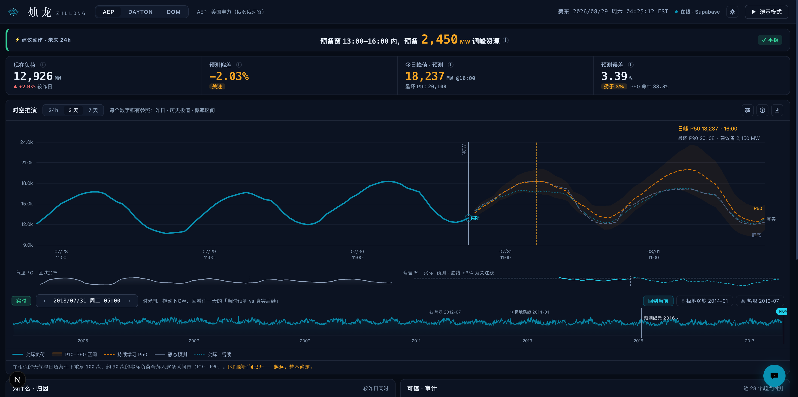

电力负荷预测决策台
LOAD FORECAST DECISION CONSOLE
烛龙
ZHULONG
看得见预测的边界
睁眼为昼，闭眼为夜。
看得见负荷 14 年的呼吸，也看得见每一次预测的边界。
看得见负荷 14 年的呼吸，也看得见每一次预测的边界。
2004 → 2018 · AEP 负荷区日峰值 · 5,054 天真值
14 YEARS OF LOAD, ONE LINE
决策告示
2018-08-02 预备窗 13:00–16:00 EST · 预备 2,171 MW 调峰资源 = P90 上界 − 97% × P50
示例为 2018-08-02 窗真值复算 · 扫码可看实时告示
2018-08-02 预备窗 13:00–16:00 EST · 预备 2,171 MW 调峰资源 = P90 上界 − 97% × P50
示例为 2018-08-02 窗真值复算 · 扫码可看实时告示

烛龙决策台 · 深色主题实拍（非设计稿）——告示条 / 四格仪表 / 时光机主图，与扫码打开的页面一致
REAL PRODUCT, NOT A MOCKUP
01时光机对质
拖动胶片回看 14 年任一天，上帝视角下「当时预测 vs 真实后续」当场对质。
02概率带决策
P10–P90 不确定性带如台风路径，调度底线用 P90 上界，预备量公式可复算。
03烛龙助手
一句话问数据：AI 实时查询生产库、当场算指标作答，出处全程可见。
3.39%
日前 24h 预测 MAPE
持续学习轨 · AEP 负荷区
静态基线 3.57%
静态基线 3.57%
88.8%
P90 区间命中率
标称 90% · 滚动 28 起点回测
P50 命中 54.2%
P50 命中 54.2%
↓41%
误差较持久性基线
训练管道独立验证
WAPE 6.51% → 3.82%
WAPE 6.51% → 3.82%
MAPE / 命中率：滚动 28 起点日前回测；基线对比：模型注册表与训练管道独立验证，非页面自证。
烛龙助手 · 数据问答
用一句话问它：「哪个时段误差最大？」它实时查询生产库、当场算出指标、以表格作答——过程与出处全程可见。
扫码进入在线决策台
zhulong-seven.vercel.app
01拖动底部胶片，回看 14 年里的任何一天
02打开上帝视角，对质「当时预测 vs 真实后续」 ——预测经得起回放
03问烛龙助手任何一个关于数据的问题 ——每个回答都有出处